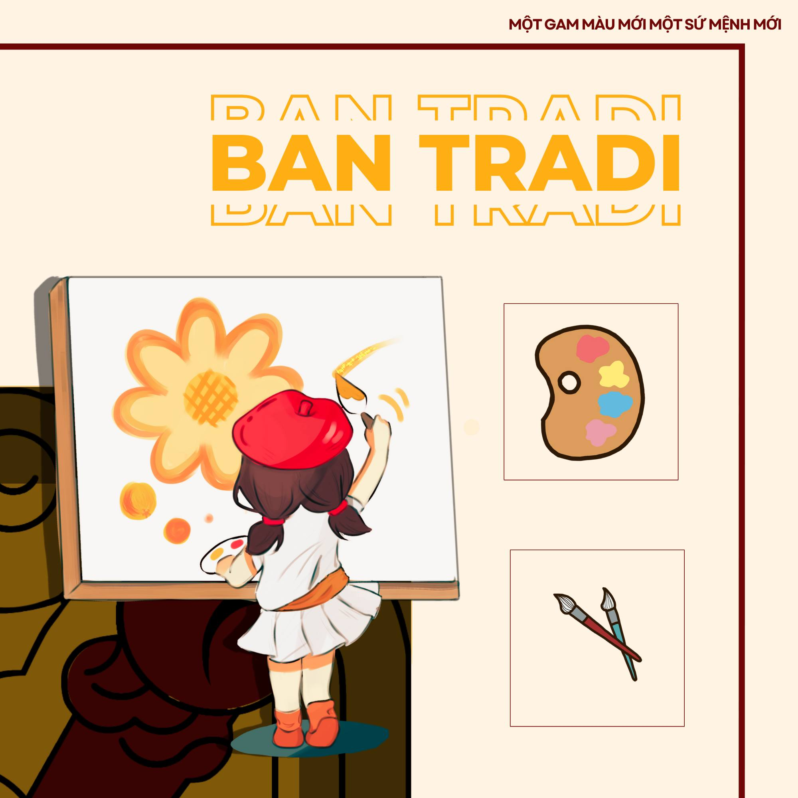
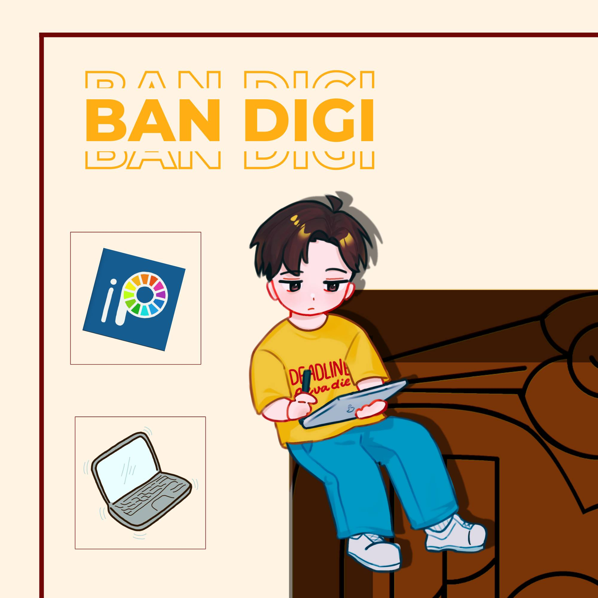
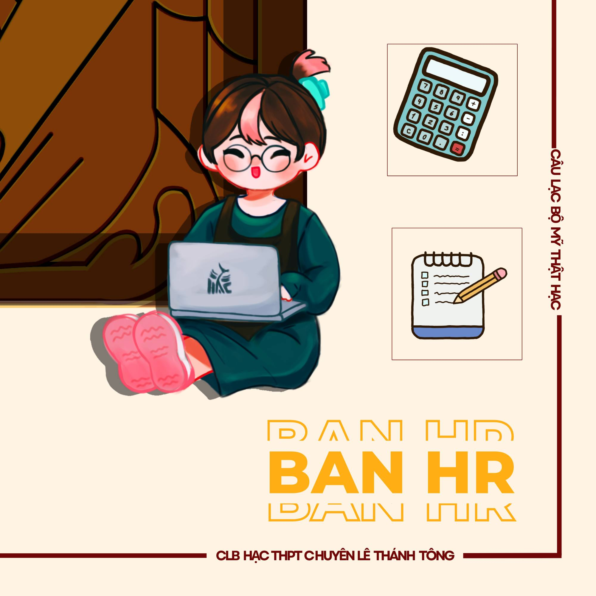
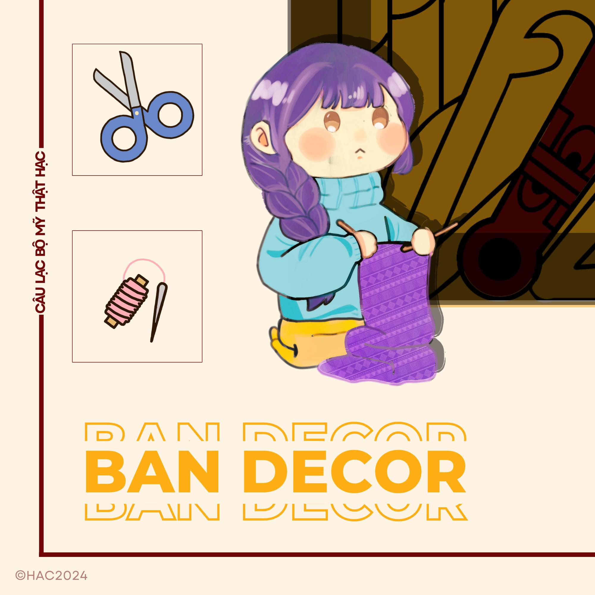

|
|
|  |
Ban Tradi
- Triển khai ý tưởng, sáng tạo và hoàn thiện những tác phẩm theo đúng các chủ đề trong câu lạc bộ đưa ra ( bằng nhiều hình thức đa dạng như vẽ chì, màu nước, phấn tiên,...).
- -Thực hiện các công việc vẽ tay trang trí trong tất cả các sự kiện của câu lạc bộ.
- Thái độ hòa đồng, tích cực và tôn trọng anh chị em, bạn bè trong câu lạc bộ.
- Thực hiện công việc, tác phẩm đúng tiến độ ( không đi trễ, không hoàn thành tác phẩm sai thời hạn được giao,...).
- Có tinh thần học hỏi, biết lắng nghe, tiếp thu ý kiến đóng góp nhằm nâng cao trình độ.
- Có kiến thức cơ bản về hội họa ( vẽ chì, phối màu cơ bản,...).
- Có mắt thẩm mỹ và trí tưởng tượng phong phú.
|
Ban Digi
- Đảm nhiệm các công việc định hướng và thiết kế các ấn phẩm điện tử trong câu lạc bộ (bao gồm những tác phẩm vẽ hoàn chỉnh hoặc những bài design poster, banner, brochure,...)
- Có những series về mỹ thuật (kiến thức, kĩ năng,...)
- Hợp tác với các ban liên quan để tạo ra các ấn phẩm truyền thông.
- Thái độ tôn trọng mọi người là điều tiên quyết để đồng hành cùng câu lạc bộ trong thời gian dài.
- Có tinh thần học hỏi, một cái đầu mở để lắng nghe ý kiến đóng góp.
- Biết sử dụng cơ bản 1 trong các phần mềm vẽ (ibisPaint X, Adobe Photoshop CC, Clip Studio Paint Pro,...).
- Có khiếu thẩm mỹ, tính cẩn thận.
- Có kiến thức cơ bản về hội họa.
|
 |
|  |
Ban HR
- Lập timeline hoàn chỉnh cho các sự kiện cụ thể.
- Đề xuất ý tưởng, lên kế hoạch cho các buổi bonding của các ban và toàn CLB.
- Đốc thúc các thành viên của phân ban được phân công hoàn thành deadline đúng hạn (nhắc nhở theo đúng khung giờ được thống nhất trước hoặc theo timeline)
- Gắn kết các thành viên trong dự án; tạo không khí, môi trường làm việc vui vẻ, chuyên nghiệp.
- Quản lý và báo cáo các chi tiêu tài chính cho các sự kiện của CLB.
- Đàm phán với các nhà tài trợ hoặc các CLB trong các dự án collab về vấn đề tài chính.
- Lên kế hoạch bài viết và thực hiện các bài viết truyền thông.
- Có khả năng hệ thống công việc và sắp xếp thời gian logic, hợp lí
- Có tính kiên định, có khă năng giao tiếp, tinh thần trách nhiệm, sáng tạo.
- Có khả năng chi tiêu, quản lí tiền bạc
- Sáng tạo, trách nhiệm, có khả năng viết
|
Ban Decor
- Đóng góp ý tưởng trong việc tạo sản phẩm handmade phù hợp nội dung sự kiện.
- Lên ý tưởng bày trí vật dụng, sản phẩm của clb trong các sự kiện phù hợp không gian.
- Thực hiện một vài sản phẩm handmade (móc len thêu thùa, làm gốm, mô hình...) cá nhân, nhóm để trưng bày cũng như up lên page CLB.
- Thái độ hòa đồng, thân thiện, và tôn trọng mọi người trong câu lạc bộ
- Có tinh thần cầu tiến và kĩ năng, phép tắc làm việc nhóm.
- Có kỹ năng làm đồ thủ công mỹ nghệ, biết phối màu
|
 |